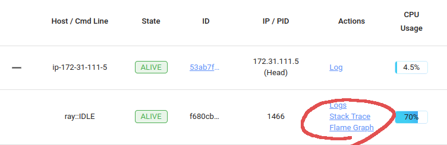

Optimizing Performance
Contents
Optimizing Performance#
No speedup#
You just ran an application using Ray, but it wasn’t as fast as you expected it to be. Or worse, perhaps it was slower than the serial version of the application! The most common reasons are the following.
Number of cores: How many cores is Ray using? When you start Ray, it will determine the number of CPUs on each machine with
psutil.cpu_count(). Ray usually will not schedule more tasks in parallel than the number of CPUs. So if the number of CPUs is 4, the most you should expect is a 4x speedup.Physical versus logical CPUs: Do the machines you’re running on have fewer physical cores than logical cores? You can check the number of logical cores with
psutil.cpu_count()and the number of physical cores withpsutil.cpu_count(logical=False). This is common on a lot of machines and especially on EC2. For many workloads (especially numerical workloads), you often cannot expect a greater speedup than the number of physical CPUs.Small tasks: Are your tasks very small? Ray introduces some overhead for each task (the amount of overhead depends on the arguments that are passed in). You will be unlikely to see speedups if your tasks take less than ten milliseconds. For many workloads, you can easily increase the sizes of your tasks by batching them together.
Variable durations: Do your tasks have variable duration? If you run 10 tasks with variable duration in parallel, you shouldn’t expect an N-fold speedup (because you’ll end up waiting for the slowest task). In this case, consider using
ray.waitto begin processing tasks that finish first.Multi-threaded libraries: Are all of your tasks attempting to use all of the cores on the machine? If so, they are likely to experience contention and prevent your application from achieving a speedup. This is common with some versions of
numpy. To avoid contention, set an environment variable likeMKL_NUM_THREADS(or the equivalent depending on your installation) to1.For many - but not all - libraries, you can diagnose this by opening
topwhile your application is running. If one process is using most of the CPUs, and the others are using a small amount, this may be the problem. The most common exception is PyTorch, which will appear to be using all the cores despite needingtorch.set_num_threads(1)to be called to avoid contention.
If you are still experiencing a slowdown, but none of the above problems apply, we’d really like to know! Create a GitHub issue and Submit a minimal code example that demonstrates the problem.
This document discusses some common problems that people run into when using Ray as well as some known problems. If you encounter other problems, let us know.
Visualizing Tasks with Ray Timeline#
View how to use Ray Timeline in the Dashboard for more details.
Instead of using Dashboard UI to download the tracing file, you can also export the tracing file as a JSON file by running ray timeline from the command line or ray.timeline from the Python API.
.. code-block:: python
ray.timeline(filename=”/tmp/timeline.json”)
Python CPU profiling in the Dashboard#
The Ray dashboard lets you profile Ray worker processes by clicking on the “Stack Trace” or “CPU Flame Graph” actions for active workers, actors, and jobs.
{kind=link}
Clicking “Stack Trace” returns the current stack trace sample using py-spy. By default, only the Python stack
trace is shown. To show native code frames, set the URL parameter native=1 (only supported on Linux).

Clicking “CPU Flame Graph” takes a number of stack trace samples and combine them into a flame graph visualization.
This flame graph can be useful for understanding the CPU activity of the particular process. To adjust the duration
of the flame graph, you can change the duration parameter in the URL. Similarly, you can change the native
parameter to enable native profiling.

The profiling feature requires py-spy to be installed. If it is not installed, or if the py-spy binary does
not have root permissions, the Dashboard prompts with instructions on how to setup py-spy correctly:
This command requires `py-spy` to be installed with root permissions. You
can install `py-spy` and give it root permissions as follows:
$ pip install py-spy
$ sudo chown root:root `which py-spy`
$ sudo chmod u+s `which py-spy`
Alternatively, you can start Ray with passwordless sudo / root permissions.
Note
If you run Ray in a Docker container, you may run into permission errors when using py-spy. Follow the py-spy documentation to resolve it.
Profiling using Python’s cProfile#
You can use Python’s native cProfile profiling module to profile the performance of your Ray application. Rather than tracking line-by-line of your application code, cProfile can give the total runtime of each loop function, as well as list the number of calls made and execution time of all function calls made within the profiled code.
Unlike line_profiler above, this detailed list of profiled function calls
includes internal function calls and function calls made within Ray.
However, similar to line_profiler, cProfile can be enabled with minimal
changes to your application code (given that each section of the code you want
to profile is defined as its own function). To use cProfile, add an import
statement, then replace calls to the loop functions as follows:
import cProfile # Added import statement
def ex1():
list1 = []
for i in range(5):
list1.append(ray.get(func.remote()))
def main():
ray.init()
cProfile.run('ex1()') # Modified call to ex1
cProfile.run('ex2()')
cProfile.run('ex3()')
if __name__ == "__main__":
main()
Now, when you execute your Python script, a cProfile list of profiled function
calls are printed on the terminal for each call made to cProfile.run().
At the very top of cProfile’s output gives the total execution time for
'ex1()':
601 function calls (595 primitive calls) in 2.509 seconds
Following is a snippet of profiled function calls for 'ex1()'. Most of
these calls are quick and take around 0.000 seconds, so the functions of
interest are the ones with non-zero execution times:
ncalls tottime percall cumtime percall filename:lineno(function)
...
1 0.000 0.000 2.509 2.509 your_script_here.py:31(ex1)
5 0.000 0.000 0.001 0.000 remote_function.py:103(remote)
5 0.000 0.000 0.001 0.000 remote_function.py:107(_remote)
...
10 0.000 0.000 0.000 0.000 worker.py:2459(__init__)
5 0.000 0.000 2.508 0.502 worker.py:2535(get)
5 0.000 0.000 0.000 0.000 worker.py:2695(get_global_worker)
10 0.000 0.000 2.507 0.251 worker.py:374(retrieve_and_deserialize)
5 0.000 0.000 2.508 0.502 worker.py:424(get_object)
5 0.000 0.000 0.000 0.000 worker.py:514(submit_task)
...
The 5 separate calls to Ray’s get, taking the full 0.502 seconds each call,
can be noticed at worker.py:2535(get). Meanwhile, the act of calling the
remote function itself at remote_function.py:103(remote) only takes 0.001
seconds over 5 calls, and thus is not the source of the slow performance of
ex1().
Profiling Ray Actors with cProfile#
Considering that the detailed output of cProfile can be quite different depending on what Ray functionalities we use, let us see what cProfile’s output might look like if our example involved Actors (for an introduction to Ray actors, see our Actor documentation).
Now, instead of looping over five calls to a remote function like in ex1,
let’s create a new example and loop over five calls to a remote function
inside an actor. Our actor’s remote function again just sleeps for 0.5
seconds:
# Our actor
@ray.remote
class Sleeper(object):
def __init__(self):
self.sleepValue = 0.5
# Equivalent to func(), but defined within an actor
def actor_func(self):
time.sleep(self.sleepValue)
Recalling the suboptimality of ex1, let’s first see what happens if we
attempt to perform all five actor_func() calls within a single actor:
def ex4():
# This is suboptimal in Ray, and should only be used for the sake of this example
actor_example = Sleeper.remote()
five_results = []
for i in range(5):
five_results.append(actor_example.actor_func.remote())
# Wait until the end to call ray.get()
ray.get(five_results)
We enable cProfile on this example as follows:
def main():
ray.init()
cProfile.run('ex4()')
if __name__ == "__main__":
main()
Running our new Actor example, cProfile’s abbreviated output is as follows:
12519 function calls (11956 primitive calls) in 2.525 seconds
ncalls tottime percall cumtime percall filename:lineno(function)
...
1 0.000 0.000 0.015 0.015 actor.py:546(remote)
1 0.000 0.000 0.015 0.015 actor.py:560(_remote)
1 0.000 0.000 0.000 0.000 actor.py:697(__init__)
...
1 0.000 0.000 2.525 2.525 your_script_here.py:63(ex4)
...
9 0.000 0.000 0.000 0.000 worker.py:2459(__init__)
1 0.000 0.000 2.509 2.509 worker.py:2535(get)
9 0.000 0.000 0.000 0.000 worker.py:2695(get_global_worker)
4 0.000 0.000 2.508 0.627 worker.py:374(retrieve_and_deserialize)
1 0.000 0.000 2.509 2.509 worker.py:424(get_object)
8 0.000 0.000 0.001 0.000 worker.py:514(submit_task)
...
It turns out that the entire example still took 2.5 seconds to execute, or the
time for five calls to actor_func() to run in serial. If you recall ex1,
this behavior was because we did not wait until after submitting all five
remote function tasks to call ray.get(), but we can verify on cProfile’s
output line worker.py:2535(get) that ray.get() was only called once at
the end, for 2.509 seconds. What happened?
It turns out Ray cannot parallelize this example, because we have only
initialized a single Sleeper actor. Because each actor is a single,
stateful worker, our entire code is submitted and ran on a single worker the
whole time.
To better parallelize the actors in ex4, we can take advantage
that each call to actor_func() is independent, and instead
create five Sleeper actors. That way, we are creating five workers
that can run in parallel, instead of creating a single worker that
can only handle one call to actor_func() at a time.
def ex4():
# Modified to create five separate Sleepers
five_actors = [Sleeper.remote() for i in range(5)]
# Each call to actor_func now goes to a different Sleeper
five_results = []
for actor_example in five_actors:
five_results.append(actor_example.actor_func.remote())
ray.get(five_results)
Our example in total now takes only 1.5 seconds to run:
1378 function calls (1363 primitive calls) in 1.567 seconds
ncalls tottime percall cumtime percall filename:lineno(function)
...
5 0.000 0.000 0.002 0.000 actor.py:546(remote)
5 0.000 0.000 0.002 0.000 actor.py:560(_remote)
5 0.000 0.000 0.000 0.000 actor.py:697(__init__)
...
1 0.000 0.000 1.566 1.566 your_script_here.py:71(ex4)
...
21 0.000 0.000 0.000 0.000 worker.py:2459(__init__)
1 0.000 0.000 1.564 1.564 worker.py:2535(get)
25 0.000 0.000 0.000 0.000 worker.py:2695(get_global_worker)
3 0.000 0.000 1.564 0.521 worker.py:374(retrieve_and_deserialize)
1 0.000 0.000 1.564 1.564 worker.py:424(get_object)
20 0.001 0.000 0.001 0.000 worker.py:514(submit_task)
...
GPU Profiling#
Ray doesn’t provide native integration with GPU profiling tools. Try running GPU profilers like Pytorch Profiler without Ray to identify the issues.
If you have related feature requests, let us know.
Profiling for Developers#
If you are developing Ray Core or debugging some system level failures, profiling the Ray Core could help. In this case, see Profiling for Ray developers.